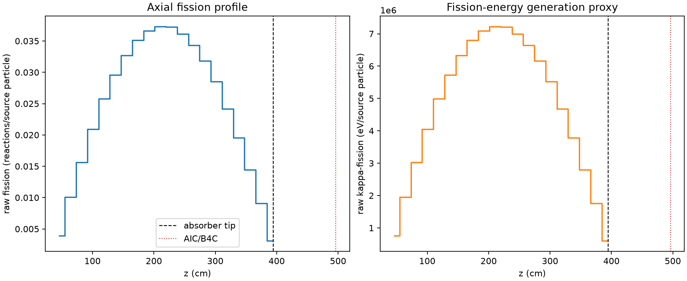
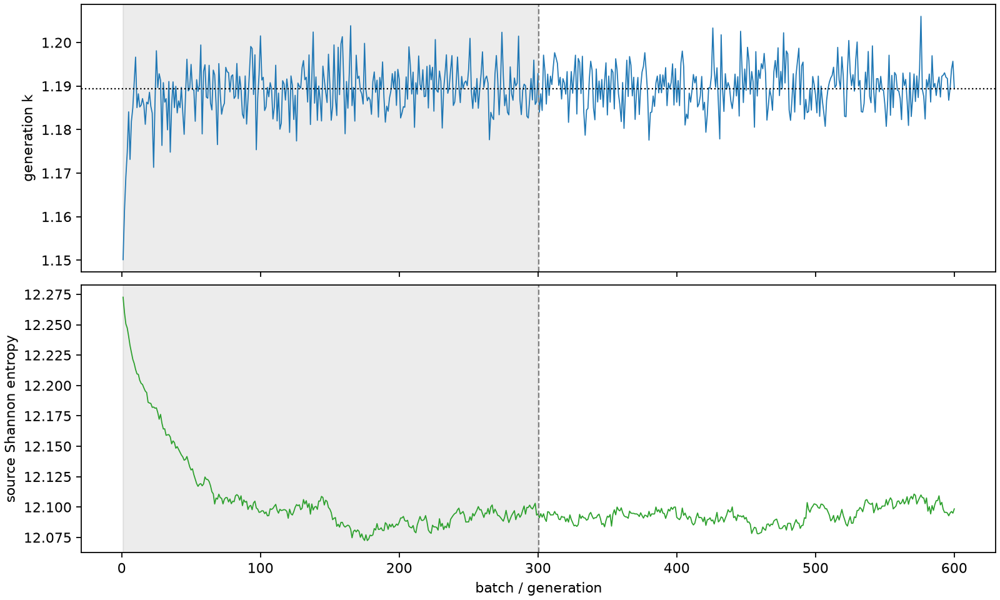

| field | value |
|---|---|
| experiment | V2-STAGE_128_OGRENCI_04-0011 |
| k | 1.1894080421102031 |
| MC standard error | 0.0001833005655632779 |
| seconds | 935.9560592920006 |
| acceptance | not_assessed |
| convergence | review_required |
Completed is output integrity only; physical and statistical review required. Zero tallies do not prove zero production or zero uncertainty.
| diagnostic | value |
|---|---|
| geometric fuel voxels | 5280 |
| zero fission tally voxels | 0 |
| low signal fuel voxels | 0 |
| low signal fission share | 0.0 |
| low signal kappa share | 0.0 |
| important fission share | 0.9500440886468009 |
| previous filter included | 5280 |
| duration estimate s | 1562.5173488400023 |
| actual minus estimate s | -626.5612895480017 |
| fission relative MC error | statistics |
|---|---|
| all_geometric_fuel | {"voxels": 5280, "positive_mean_voxels": 5280, "zero_mean_voxels": 0, "undefined_relative_error_voxels": 0, "median": 0.010844011483162847, "p95": 0.029111606670644073, "maximum": 0.03744221421753479} |
| low_signal | {"voxels": 0, "positive_mean_voxels": 0, "zero_mean_voxels": 0, "undefined_relative_error_voxels": 0, "median": null, "p95": null, "maximum": null} |
| important_95pct | {"voxels": 4272, "positive_mean_voxels": 4272, "zero_mean_voxels": 0, "undefined_relative_error_voxels": 0, "median": 0.010263803545847366, "p95": 0.014718638077778318, "maximum": 0.01919457605608435} |
| outside_previous_filter | {"voxels": 0, "positive_mean_voxels": 0, "zero_mean_voxels": 0, "undefined_relative_error_voxels": 0, "median": null, "p95": null, "maximum": null} |
| kappa_fission relative MC error | statistics |
|---|---|
| all_geometric_fuel | {"voxels": 5280, "positive_mean_voxels": 5280, "zero_mean_voxels": 0, "undefined_relative_error_voxels": 0, "median": 0.010832637746979401, "p95": 0.029076903358108478, "maximum": 0.037395191375683014} |
| low_signal | {"voxels": 0, "positive_mean_voxels": 0, "zero_mean_voxels": 0, "undefined_relative_error_voxels": 0, "median": null, "p95": null, "maximum": null} |
| important_95pct | {"voxels": 4272, "positive_mean_voxels": 4272, "zero_mean_voxels": 0, "undefined_relative_error_voxels": 0, "median": 0.01025168378508719, "p95": 0.014702358456316142, "maximum": 0.019174587873892486} |
| outside_previous_filter | {"voxels": 0, "positive_mean_voxels": 0, "zero_mean_voxels": 0, "undefined_relative_error_voxels": 0, "median": null, "p95": null, "maximum": null} |
| axial bin | fission share | kappa-fission share |
|---|---|---|
| 1 | 0.00811054036787735 | 0.008110931277843847 |
| 2 | 0.02068862961410371 | 0.020688558596747283 |
| 3 | 0.03213097665164613 | 0.03213081492053488 |
| 4 | 0.043007083849717756 | 0.04300703375611177 |
| 5 | 0.05301074005343733 | 0.05301054684258609 |
| 6 | 0.060936047619467776 | 0.06093605898069718 |
| 7 | 0.06725792884768353 | 0.06725791869618986 |
| 8 | 0.07225811030618082 | 0.07225808110872593 |
| 9 | 0.07532327926569558 | 0.07532330149727641 |
| 10 | 0.07672776538027741 | 0.07672769593271966 |
| 11 | 0.07661309668465044 | 0.076613009695414 |
| 12 | 0.07431203286323719 | 0.0743119113266416 |
| 13 | 0.07062801513644212 | 0.07062792636152478 |
| 14 | 0.06546203812416276 | 0.06546195577890605 |
| 15 | 0.05866202352627434 | 0.05866195334973578 |
| 16 | 0.04975729846286162 | 0.049757410473374925 |
| 17 | 0.04027947722878099 | 0.040279437627504175 |
| 18 | 0.029749057814884863 | 0.029748928363243544 |
| 19 | 0.018686016226981204 | 0.018685978748090925 |
| 20 | 0.0063998419756369825 | 0.006400546666131155 |
Histories include the inactive-to-active transition at batch 300. kappa-fission approximates fission energy production, not total heat deposition.

